"Workers" is a photographic project where Sebastião Salgado captured the lives of laborers from around the world. He traveled to various countries and regions, including Brazil, India, and Africa, to document workers in different industries such as mining, agriculture, and manufacturing.
Through his images, Salgado depicted the often grueling and hazardous conditions in which these workers labor. He aimed to shed light on the human cost of industrialization and globalization, as well as the resilience and dignity of the working class.
The project emphasizes the universal nature of labor and the interconnectedness of people across borders, highlighting the common challenges faced by workers regardless of their geographical location or socioeconomic status.
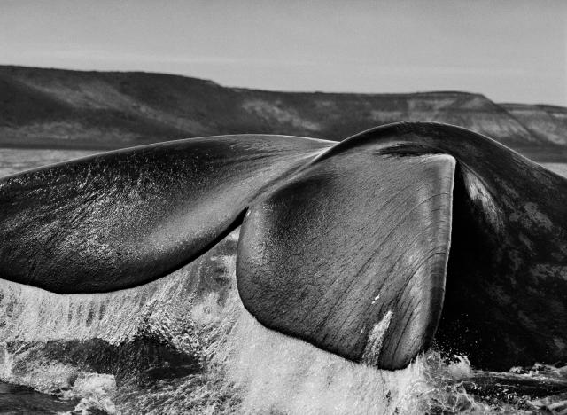
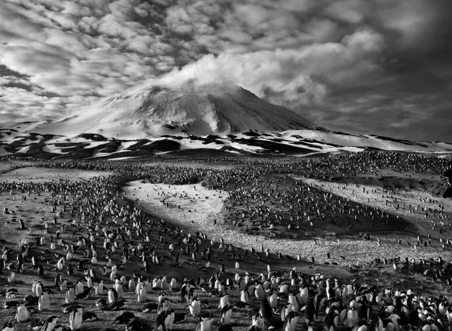
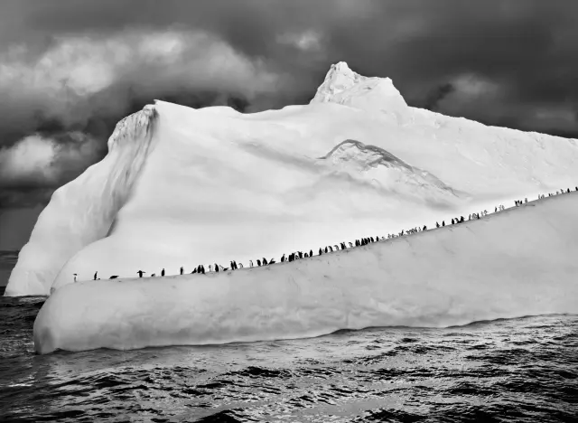
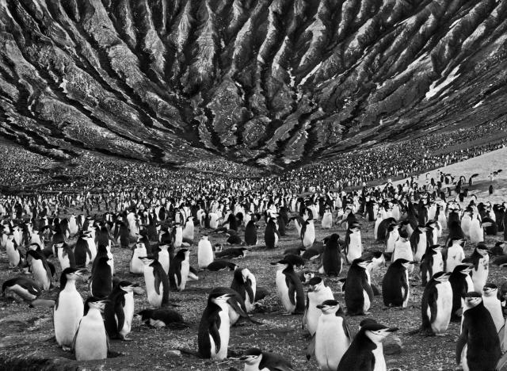
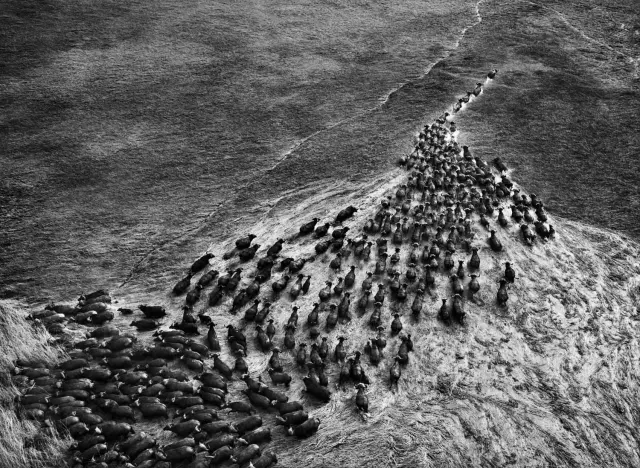
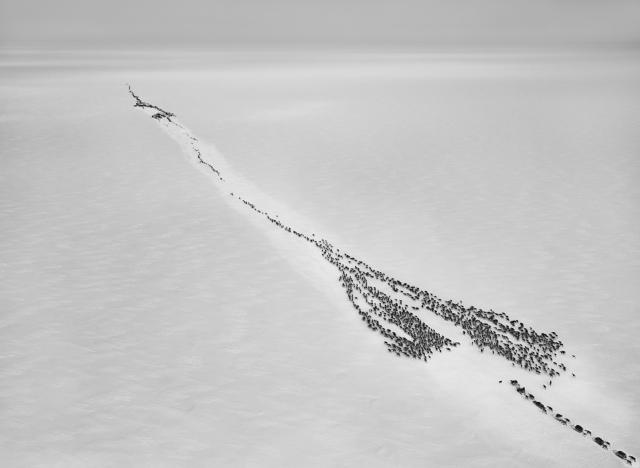
"Genesis" is a monumental project that Sebastião Salgado worked on for over eight years. It is a visual exploration of pristine landscapes, wildlife, and indigenous cultures that have remained largely untouched by modern civilization.
Salgado traveled to remote and isolated regions of the world, including the Amazon rainforest, the African savannah, and the Arctic, to capture the beauty and diversity of nature.
The project serves as a call to action for the conservation and preservation of our planet's natural heritage. Through his images, Salgado aims to inspire awe and reverence for the Earth's ecosystems and to remind viewers of the urgent need to protect them for future generations.
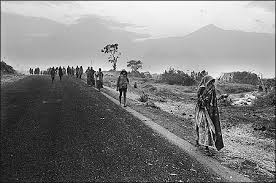
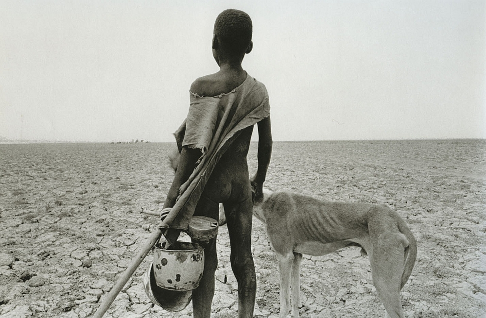
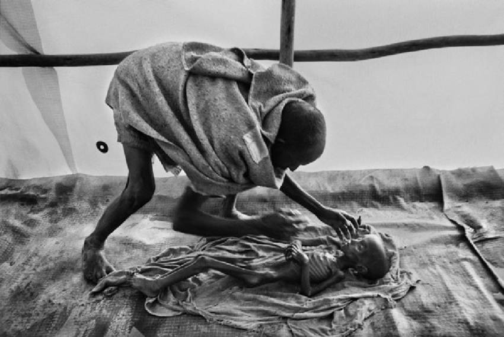
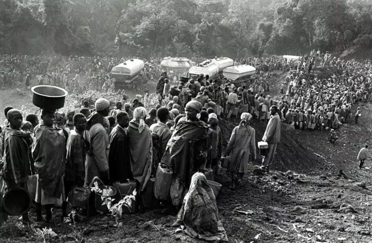
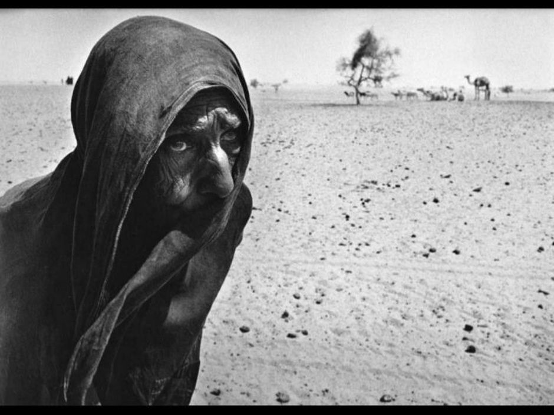
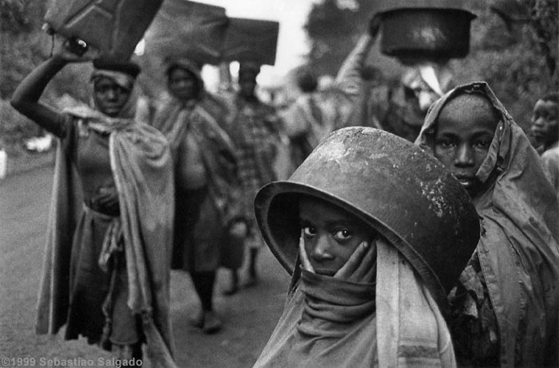
"Migrations" is a photographic project that focuses on the global phenomenon of human migration. Sebastião Salgado traveled to different continents to document the experiences of people forced to leave their homes due to war, poverty, and environmental disasters.
Through his images, Salgado portrays the hardships faced by migrants and refugees, including long and perilous journeys, overcrowded refugee camps, and the struggle for survival in unfamiliar environments.
The project highlights the human cost of political conflicts, economic inequality, and environmental degradation. Salgado's goal is to foster empathy and understanding for migrants and refugees, as well as to raise awareness about the root causes of displacement.
"Migrations" is a photographic project that focuses on the global phenomenon of human migration. Sebastião Salgado traveled to different continents to document the experiences of people forced to leave their homes due to war, poverty, and environmental disasters.
Through his images, Salgado portrays the hardships faced by migrants and refugees, including long and perilous journeys, overcrowded refugee camps, and the struggle for survival in unfamiliar environments.
The project highlights the human cost of political conflicts, economic inequality, and environmental degradation. Salgado's goal is to foster empathy and understanding for migrants and refugees, as well as to raise awareness about the root causes of displacement.
 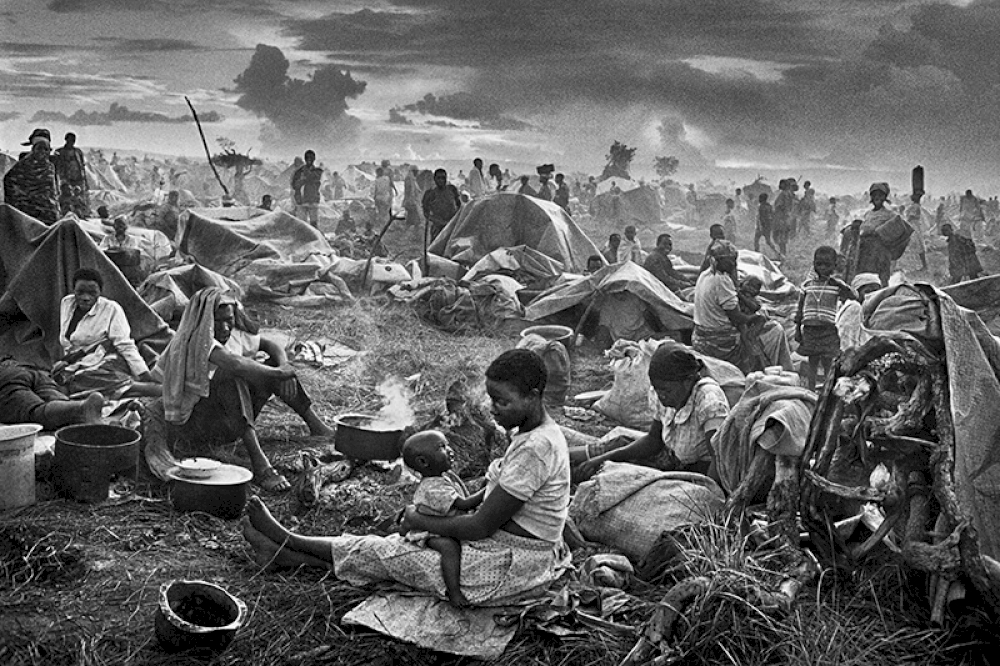
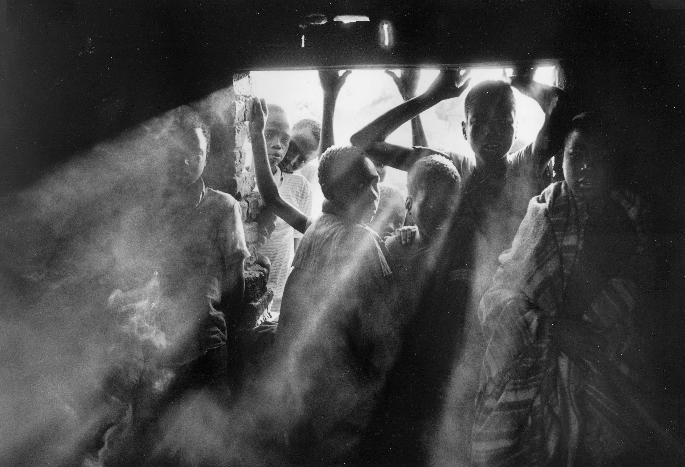
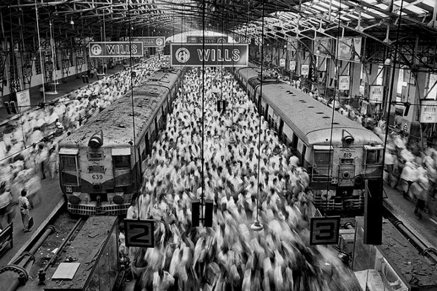
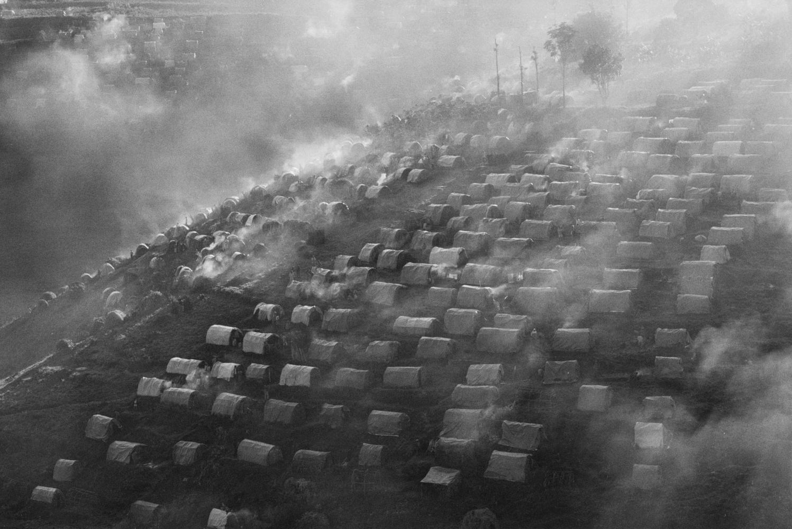
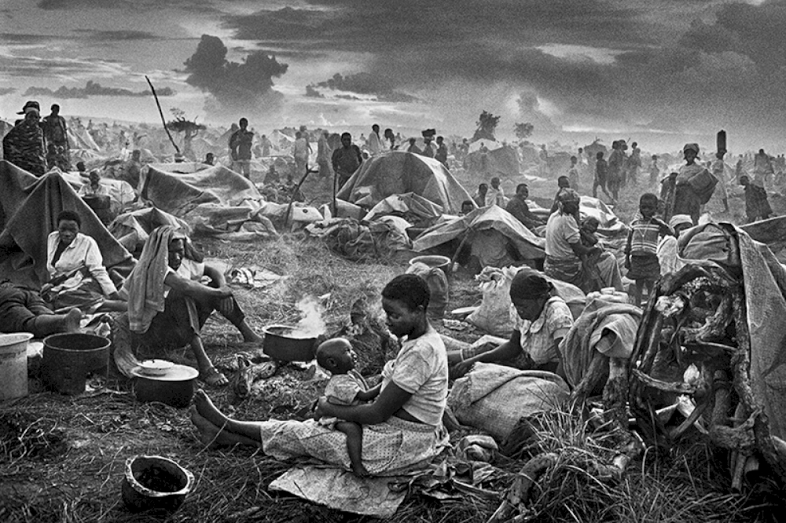
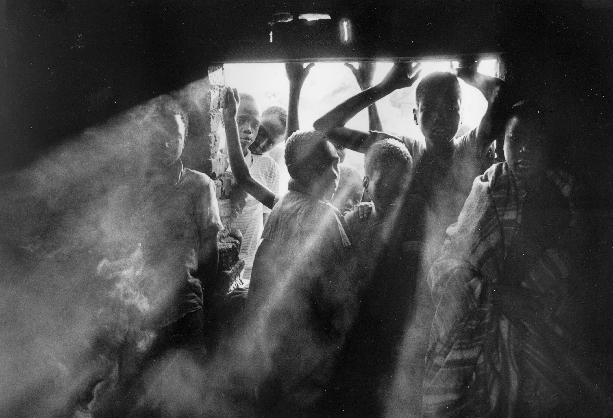
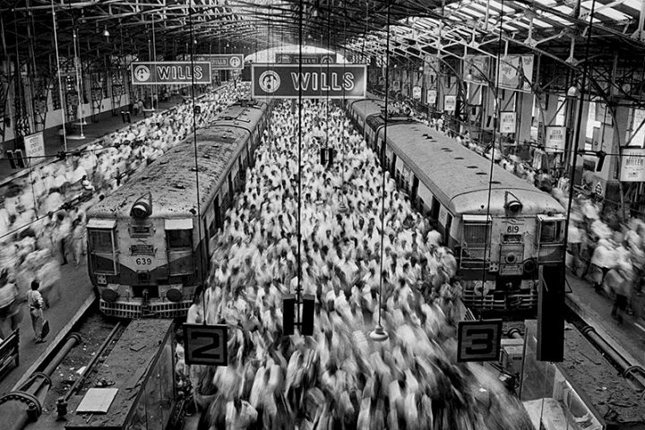
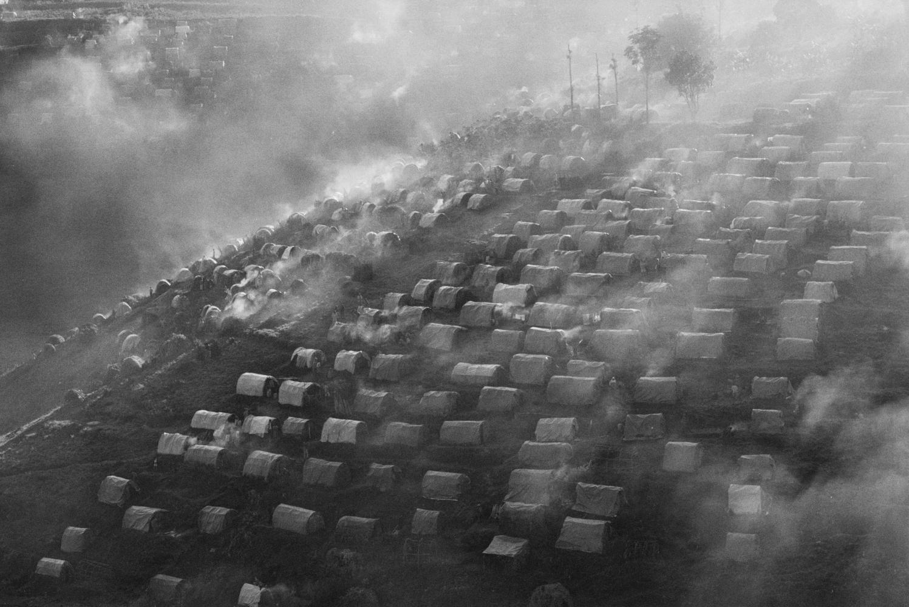